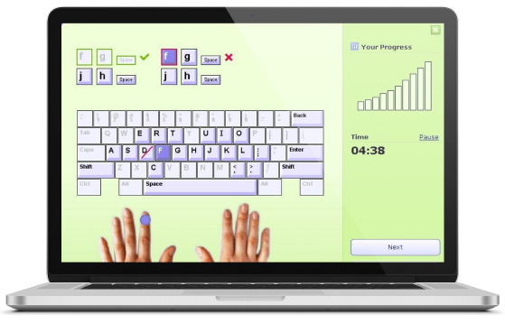

Typing is the act of entering text into a computer, smartphone, or other
devices by pressing keys on a keyboard. It began with mechanical
typewriters in the 19th century and has evolved with the advent of
digital technology. Today, typing is an essential skill for many aspects
of daily life, from professional work to personal communication. Touch
typing, where individuals use all ten fingers without looking at the
keys, is the most efficient typing method, significantly improving speed
and accuracy. Typing speed is usually measured in words per minute
(WPM), and skilled typists can achieve over 100 WPM with consistent
practice. Typing is also crucial in programming, data entry, and online
communication. As digitalization grows, the demand for strong typing
skills continues to increase, with many jobs requiring a minimum typing
speed for productivity. Various tools, such as typing speed tests and
courses, are available to help people improve their typing efficiency.
You said Typing has evolved from mechanical typewriters to modern
digital keyboards, playing a crucial role in both professional and
personal activities. In the past, typewriters required significant
manual effort, but today’s keyboards are ergonomic, faster, and more
responsive. The introduction of computers has made typing a universal
skill, used for everything from coding and writing to gaming and
communication. Touch typing is the most efficient method, using all
fingers and maintaining focus on the screen rather than the keys. It
enhances speed, accuracy, and productivity, with professional typists
often reaching 70-100 words per minute (WPM) or more, compared to the
average of 40 WPM. Typing speed is measured in WPM and includes the
accuracy rate, which counts the errors made.

TypingMaster 11 is a touch typing tutor that adapts to your unique
needs. It provides over 10 hours of customized exercises to guide you
step by step to professional keyboarding. As a result, your typing
speed
is likely to double - or even triple - and you will save hours and
hours
of valuable working time.
Training is adjusted to your personal progress ,
every step of the way. TypingMaster pinpoints your weak spots and
eliminates them with personalized exercises. Thanks to this dynamic
approach your new skill is ready for action after 3 to 5 hours of
training. You can now download the free 1-week trial with all
features.
Easy to Use Typing Tutor
New Typing Master Widget
With TypingMeter, our unique widget for tracking and analyzing your
keyboarding when you work on your PC, you can keep on honing your
writing skills long after finishing the touch-type lessons. With this
unbeatable widget that you won't find in any other keyboarding software,
you can track your writing habits and use the collected data in targeted
training sessions.
Whether writing an email or a report or chatting
online, the TypingMeter records your keystrokes, tracks and analyzes
your writing patterns, and identifies the keys and words that repeatedly
cause difficulties. From time to time, the TypingMeter will pop up on
the screen and suggest that you do a lesson focusing on your difficult
letters and words.
You can measure your current word per minute speed and accuracy with advanced typing skill tests and print out a diploma / certificate. Premium version allows to add custom texts. Choose a test time 1-30 minutes.
Play our fun typing games to see how far your typing skills will take you! While training TypingMaster app detects your problematic fingers or keys that need extra practice and you can take additional exercises or games focusing to them. Millions of people download every year TypingMaster computer software program for typing practice purposes.
Typing Master + Diploma
Statistics & Review
While training TypingMaster detects your problematic fingers or keys that need extra practice and creates additional tailor made exercises for them. The multilingual lessons are available for Qwerty, Qwertz and Azerty keyboards in English, Spanish, French, German, Dutch, Swedish, Finnish, Italian + Portuguese
Advanced TypingMeter statistics allow you to easily follow how much you have typed and how your wpm speed progresses on a daily and weekly basis. When recurring problems are detected, TypingMeter suggests a quick training session with tailor-made lessons to hone those problem keys. Over a few weeks you'll eliminate those pain points that slow you down - what an easy way to perfect your typing skills!
Try before you buy! You can now download the free 1- week typing tutor with all features. After 7-days trial period all Premium features will be limited. Through the Every Child Learns to Type Program, free charity licenses are available for developing nations.